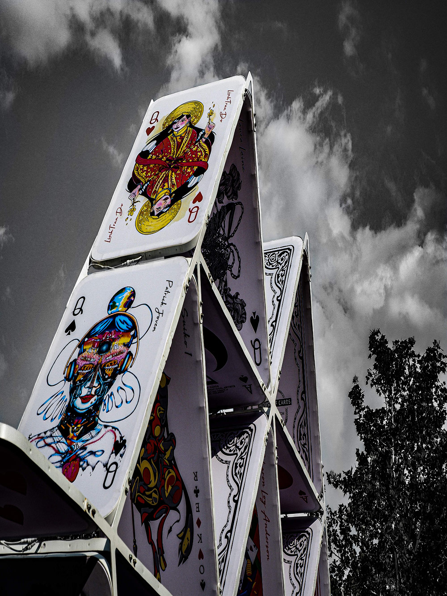
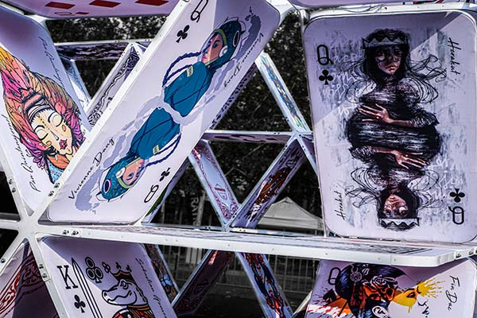
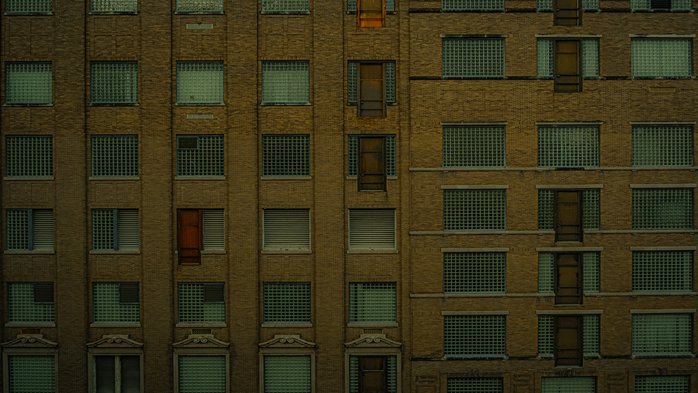
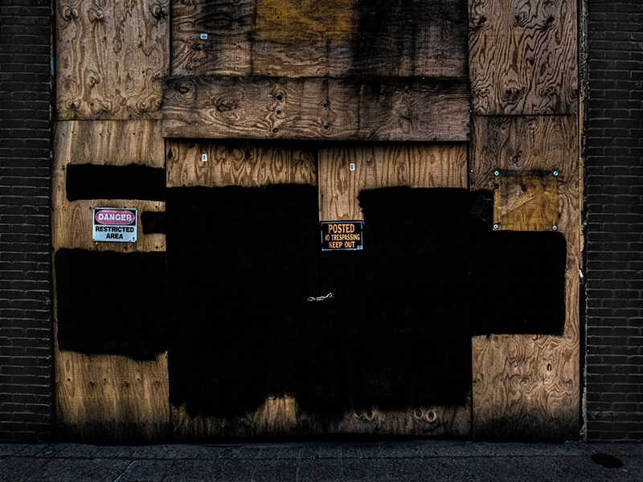
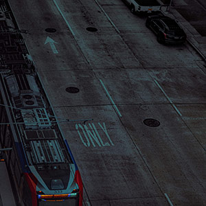

 
Lifesize house of Cards Installation at Discovery Green park in Houston.

A Houston building with since removed fire escapes, creating the belief that it was designed by a homicidal architect.

Boarded up store in Houston, caused by protest turned riot.

The Houston metro making a stop in downtown Houston.